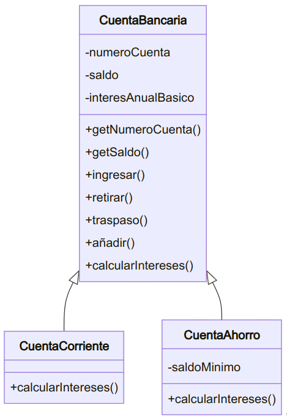
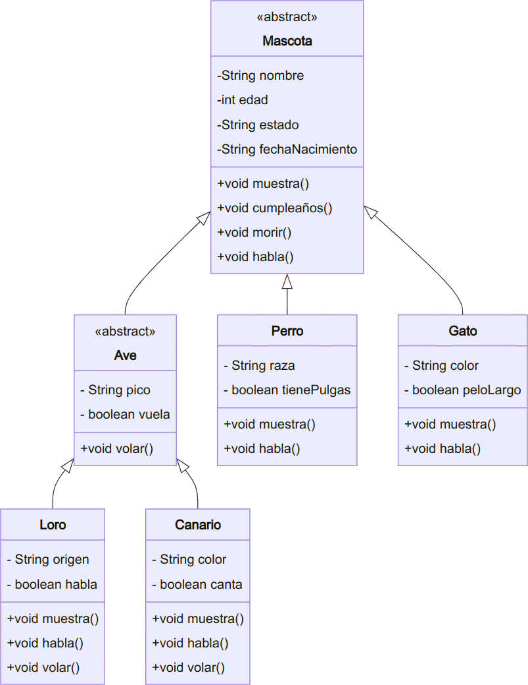

Actividades UT05
Empaquetar actividades
Empaqueta las actividades, dentro de la carpeta ut05/bloqueX
Bloque 5.0
Actividad 01
Dada las siguientes definiciones de clases:
public class Persona {
private String nombre;
private int edad;
public Persona (){
this.nombre = "";
this.edad = 0;
}
public Persona(String n, int e){
this.nombre = n;
this.edad = e;
}
public String toString(){
return "Nombre: " + nombre + "Edad " + edad;
}
public final String getNombre (){
return nombre;
}
public final int getEdad(){
return edad;
}
}class Estudiante extends Persona {
private double creditos;
public Estudiante(String n, int e, double c){
super(n,e);
this.creditos = c;
}
public String toString(){
return super.toString() + "\nCreditos: "+ creditos;
}
}class Empleado extends Persona {
private double salario;
public Empleado(String n, int e, double s){
super(n,e);
this.salario = s;
}
public String toString(){
return "Nombre: "+ this.nombre +
"\nSalario: "+ this.salario;
}
}class Test{
public static void main(String[] args) {
Estudiante e = new Estudiante("pepe",18,100);
System.out.println(e);
}
}Responde a las siguientes cuestiones justificando las respuestas:
a. ¿Es necesario el uso de this en el constructor de la clase Estudiante?
b. ¿Es necesario el uso de super en el método toString de la clase Estudiante?
c. Si quitásemos el constructor de la clase Estudiante ¿daría un error de compilación?
d. En el método toString de la clase Empleado ¿por qué es incorrecto el acceso que se hace al atributo nombre? ¿Cómo se tendría que definir nombre en la clase Persona para evitar el error?
e. ¿Qué consecuencia tiene que algunos métodos de la clase Persona se hayan definido final?
f. Si el método toString no se hubiera definido en ninguna de las tres clases ¿daría error el sout del método main?
Puedes hacer todas las pruebas que consideres necesarias antes de responder.
Actividad 02
paquete: A02_centroestudios
Diseñar una jerarquía de clases para modelizar las aulas de un centro de estudios.
De una Aula se conoce el código (numérico), la longitud y la anchura. Se desea un método que devuelva la capacidad del aula sabiendo que esta se calcula a partir de la superficie a razón de 1 alumnos por cada 1.4 metros cuadrados de superficie.
Además de las aulas, digamos normales, existen aulas de música y aulas de informática. En las aulas de música se necesita conocer si tienen o no piano. De las aulas de informática se conoce el número de ordenadores y su capacidad no se calcula en función de la superficie, sino a razón de dos alumnos por ordenador.
Implementar el método toString de cada una de las clases diseñadas para que devuelva:
-
En las aulas normales, el
códigoy lasuperficiey lacapacidad. -
En las aulas de música e informática el texto irá precedido por "Aula de música" o "Aula de informática", según corresponda.
Crea también una clase TestAula para probar las clases generadas.
Actividad 03
paquete: A03_trabajadores
Crea una clase Empleado y una subclase Encargado.
Para los empleados, crea los atributos: dni, nombre, apellidos, sueldoBase, turno (mañana, tarde o noche). El encargado tendrá además, el area de la que se encarga y la cantidad de empleados a su cargo.
Los encargados reciben un 10% más de sueldo base que un empleado normal. Implementa dichas clases con sus atributos y métodos (getters, setters y mostrarDatos).Sobrescribe el método getSueldo() para los encargados.
Actividad 04
paquete: A04_juego
a) Crear la clase Dado, la cual desciende de la clase Sorteo. La clase Dado, en la llamada lanzar() mostrará un número aleatorio del 1 al 6 (Puedes usar la clase Random).
b) Crear la clase Moneda, la cual desciende de la clase Sorteo. Esta clase en la llamada al método lanzar() mostrará las palabras cara o cruz.
c) Realizar una clase testJuego con un método main que compruebe todo lo realizado.
Actividad 05
paquete: A05_seguridadEmpleados
- Crear una clase
Empleadocon los atributosnombre,dniysueldoMensualy un métodocalcularSueldoAnual(). El métodocalcularSueldoAnual()será final y no podrá sobrescribirse. - Crear una subclase
Gerenteque herede deEmpleado. En esta clase se añadirá un atributobonoy un método que devuelva el sueldo total anual, sumando el bono. El métodocalcularSueldoBono()no podrá sobrescribirse debido al uso del modificadorfinal. - Crear una subclase
Internoque herede deEmpleadopero no pueda tener subclases adicionales utilizando el modificadorfinalen la clase. Añade el atributotiempoTrabajado. - Implementar una clase
TestEmpleadosque pruebe las restricciones de herencia y sobrescritura en las subclases. Para ello:- Crea un array de 3 empleados.
- Inicializa cada uno de ellos en un tipo distinto de los creados.
- Prueba los métodos implementados.
Actividad 06
paquete: A06_animales
- Crear una jerarquía de clases para modelar diferentes tipos de animales en una granja.
- Superclase:
Animal(con atributosnombre,edady un métodohacerSonido()que será sobrescrito por las subclases). - Subclases:
Vaca,CerdoyGallina, cada una con su propia implementación del métodohacerSonido().
- Superclase:
- Crear una clase
Granjaque cree un array de 3 animales, inicialice cada uno a un tipo diferente de animal y utilice el polimorfismo para llamar al métodohacerSonido()de cada animal.
Actividad 07
paquete: A07_empresaEmpleados
Vamos a implementar dos clases que permitan gestionar datos de empresas y sus empleados.
Los empleados tienen las siguientes características:
- Un empleado tiene nombre, DNI, sueldo bruto (mensual), edad, teléfono y dirección.
- El nombre y DNI de un empleado no pueden variar.
- Es obligatorio que todos los empleados tengan al menos definido su nombre, DNI y el sueldo bruto. Los demás datos no son obligatorios.
- Será necesario un método para imprimir por pantalla la información de un empleado (incluyendo el sueldo bruto y el sueldo neto).
- Será necesario un método para calcular el sueldo neto de un empleado. El sueldo neto se calcula descontando del sueldo bruto un porcentaje que depende del IRPF. El porcentaje del IRPF depende del sueldo bruto anual del empleado (sueldo bruto x 12 pagas).(*)
| Sueldo bruto anual | IRPF |
|---|---|
| Inferior a 12.000 € | 20% |
| De 12.000 a 25.000 € | 30% |
| Más de 25.000 € | 40% |
Por ejemplo, un empleado con un sueldo bruto anual de 17.000 € tendrá un 30% de IRPF. Para calcular su sueldo neto mensual se descontará un 30% a su sueldo bruto mensual.
Las empresas tienen las siguientes características:
- Una empresa tiene nombre y CIF (datos que no pueden variar), además de teléfono, dirección y empleados. Cuando se crea una nueva empresa esta carece de empleados.
- Serán necesarios métodos para:
- Añadir y eliminar empleados a la empresa.
- Mostrar por pantalla la información de todos los empleados.
- Calcular la suma total de sueldos brutos de todos los empleados.
- Calcular la suma total de sueldos netos de todos los empleados.
Implementa las clases Empleado y Empresa con los atributos oportunos, los constructores, los getters/setters oportunos y los métodos indicados. Puedes añadir más métodos si lo ves necesario. Estas clases no deben realizar ningún tipo de entrada por teclado.
Implementa también una clase Programa con una función main para realizar pruebas: Crear una o varias empresas, crear empleados, añadir y eliminar empleados a las empresas, listar todos los empleados, mostrar el total de sueldos brutos y netos, etc.
El IRPF realmente es más complejo pero se ha simplificado para no complicar demasiado este Actividad .
Bloque 5.1 - Herencia y jerarquía de clases
Actividad 08
paquete: A08_videojuegos
Un salón de videojuegos dispone de ordenadores en los que los clientes pueden jugar. Además de jugar en el establecimiento, la empresa alquila y vende juegos.
a) Diseñar la clase Juego siguiendo las siguientes especificaciones:
- Atributos
protected:titulo(String),fabricante(String),año(int). - Método constructor
public Juego(String t, String f, int a) - Métodos consultores de todos los atributos.
public String toString(), que devuelve un String con los datos del Juego.public boolean equals(Object o): Dos juegos son iguales si tienen el mismo título, fabricante y año.
b) Diseñar las clases JuegoEnAlquiler y JuegoEnVenta (y otras si se considera oportuno), sabiendo que, además de los atributos descritos anteriormente, tienen:
-
precio -
nº de copias disponibles -
La clase
JuegoEnAlquilertiene:_ un atributo que indica el número de días que se alquila.
_ un método constructor que recibe todos sus datos.
_ un método
alquilarque decrementa el número de copias disponibles._ un método
devolverque incrementa el número de copias disponibles._
toString()devuelve todos los datos delJuegoEnAlquiler. -
La clase
JuegoEnVentatiene:_ un método constructor que recibe todos sus datos.
_ un método
vender, que decrementa el número de copias disponibles._
toString()devuelve todos los datos delJuegoEnVenta.
c) Crea también una clase TestJuego para probar objetos de las clases JuegoEnAlquiler y JuegoEnVenta.
Actividad 09
paquete: A09_fnmt
La Fabrica Nacional de Moneda y Timbre quiere almacenar cierta información técnica del dinero (billetes y monedas) que emite. En concreto, le interesa:
- Valor: valor de la moneda o billete, en euros (
double). - Año de emisión: año en que fue emitida la moneda o billete (
int). - De las monedas:
_ Diámetro: diámetro de la moneda, en milímetros. (double).
_ Peso: peso de la moneda, en gramos (double). - De los billetes:
_ Altura del billete en mm (double).
_ Anchura del billete en mm (double).
a) Diseñar la clase abstracta Dinero y sus subclases Moneda y Billete, desarrollando:
- Constructores que reciban los datos necesarios para inicializar los atributos de la clase correspondiente.
- Método
equals: dos monedas o billetes son iguales si tienen el mismo año de emisión y valor. - Método
toString: que muestre todos los datos del billete o moneda. Los billetes irán precedidos por el texto "BILLETE" y las monedas por el texto "MONEDA".
b) Diseñar la clase TestDinero para probar las clases desarrolladas. Crear objetos de las clases Moneda y Billete y mostrarlos por pantalla.
Actividad 10
paquete: A10_vehiculos
- Crear una superclase abstracta
Vehiculocon el atributo velocidad y el métodoacelerar()yfrenar(), que serán sobrescritos por sus subclases. - Crear subclases
CocheyMotoque sobrescriban el métodoacelerar()yfrenar()con su propia implementación. - Crear una clase
Carreteraque permita añadir varios vehículos (en un array) y simule una carrera, llamando a los métodosacelerar()yfrenar()de los distintos vehículos. Esta recibirá como parámetros en el constructor la cantidad de vehículos máxima que puede tener. También debes implementar el método necesario para añadir un nuevo vehículo, así como los que consideres oportunos para poder acelerar o frenar los vehículos existentes. - Implementar una clase
TestVehiculospara probar crear una carretera y probar la funcionalidad.
Actividad 11
paquete: A11_centrocomercial
Un centro comercial quiere mostrar cierta información sobre los televisores que vende. Los televisores pueden ser de dos tipos: de tubo o LCD. En concreto, de cada televisor le interesa mostrar:
- marca (String).
- modelo (String).
- precio en euros.
- pulgadas de la pantalla (double).
- resolución: La resolución se mide de forma distinta en los televisores de tubo que en los televisores LCD.
- En los TV de tubo se mide en lineas.
- En los TV LCD se mide píxels horizontales x píxels verticales.
a) Diseñar la clase Televisor con los atributos y métodos comunes a los dos tipos de televisores y sus subclases TvTubo y TvLcd con los atributos y métodos que sea necesario:
- Constructor de cada clase que permita inicializar todos los datos de la clase.
equals: dos televisiones son iguales si son de la misma marca y modelo.public String resulucion(): devuelve un texto con la resolución del televisor, como por ejemplo "420 lineas" o "800 x 600 píxels" dependiendo del tipo de televisor.public String toString(): devuelve un texto con la marca, modelo, precio, pulgadas y resolución.
b) Diseñar la clase TestTV para probar las clases diseñadas. Crear algunos objetos de las clases TvTubo y TvLcd y mostrarlos por pantalla.
Actividad 12
paquete: A12_vehiculos
Aconsejable: realizar el diseño UML antes de empezar a programar.
Debes crear varias clases para un software de una empresa de transporte. Implementa la jerarquía de clases necesaria para cumplir los siguientes criterios:
- Los vehículos de la empresa de transporte pueden ser terrestres, acuáticos y aéreos. Los vehículos terrestres pueden ser coches y motos. Los vehículos acuáticos pueden ser barcos y submarinos. Los vehículos aéreos pueden ser aviones y helicópteros.
- Todos los vehículos tienen matrícula y modelo (datos que no pueden cambiar). La matrícula de los coches terrestres deben estar formadas por 4 números y 3 letras. La de los vehículos acuáticos por entre 3 y 10 letras. La de los vehículos aéreos por 4 letras y 6 números.
- Los vehículos terrestres tienen un número de ruedas (dato que no puede cambiar).
- Los vehículos acuáticos tienen eslora (dato que no puede cambiar).
- Los vehículos aéreos tienen un número de asientos (dato que no puede cambiar).
- Los coches pueden tener aire acondicionado o no tenerlo.
- Las motos tienen un color.
- Los barcos pueden tener motor o no tenerlo.
- Los submarinos tienen una profundidad máxima.
- Los aviones tienen un tiempo máximo de vuelo.
- Los helicópteros tienen un número de hélices.
- No se permiten vehículos genéricos, es decir, no se deben poder instanciar objetos que sean vehículos sin más. Pero debe ser posible instanciar vehículos terrestres, acuáticos o aéreos genéricos (es decir, que no sean coches, motos, barcos, submarinos, aviones o helicópteros).
- El diseño debe obligar a que todas las clases de vehículos tengan un método imprimir() que imprima por pantalla la información del vehículo en una sola línea.
Implementa todas las clases necesarias con: atributos, constructor con parámetros, getters/setters y el método imprimir. Utiliza abstracción y herencia de la forma más apropiada.
Implementa también una clase Programa para hacer algunas pruebas: Instancia varios vehículos de todo tipo (coches, motos, barcos, submarinos, aviones y helicópteros) así como vehículos genericos (terrestres, acuáticos y aéreos). Crea un ArrayList y añade todos los vehículos. Recorre la lista y llama al método imprimir de todos los vehículos.
Actividad 13
paquete: A13_biblioteca
- Crear una jerarquía de clases para gestionar una biblioteca:
- Superclase
Publicacioncon atributostitulo,autor,año. - Subclases
LibroyRevista.Librotendrá un atributoisbnyRevistaun atributonumeroEdicion. - Crear una clase
Bibliotecaque contenga un arrayList de publicaciones y permita añadir, eliminar y buscar publicaciones. - Implementar una clase
TestBibliotecaque pruebe todas las funcionalidades de la biblioteca utilizando las clases heredadas.
Actividad 14
paquete: A14_facultad
Realizar una aplicación para la gestión de la información de las personas vinculadas a una Facultad, que se pueden clasificar en tres tipos: estudiantes, profesores y personal de servicio.
A continuación, se detalla qué tipo de información debe gestionar esta aplicación:
- Por cada
Persona, se debe conocer, al menos, su nombre y apellidos, su número de identificación y su estado civil. - Con respecto a los
Empleados, sean del tipo que sean, hay que saber su año de incorporación a la facultad y qué número de despacho tienen asignado. - En cuanto a los
Estudiantes, se requiere almacenar el curso en el que están matriculados. - Por lo que se refiere a los
Profesores, es necesario gestionar a qué departamento pertenecen (lenguajes, matemáticas, arquitectura, ...). - Sobre el
Personal de servicio, hay que conocer a qué sección están asignados (biblioteca, decanato, secretaría, ...).
El Actividad consiste, en primer lugar, en definir la jerarquía de clases de esta aplicación. A continuación, debe programar las clases definidas en las que, además de los constructores, hay que desarrollar los métodos correspondientes a las siguientes acciones:
- Cambio del estado civil de una persona.
- Reasignación de despacho a un empleado.
- Matriculación de un estudiante en un nuevo curso.
- Cambio de departamento de un profesor.
- Traslado de sección de un empleado del personal de servicio.
- Imprimir toda la información de cada tipo de individuo.
En el método main crear un array de personas. Crear diferentes instancias de las subclases e insertarlas en el array. Probar los diferentes métodos desarrollados.
Actividad 15
paquete: A15_banco
Vamos a hacer una aplicación que simule el funcionamiento de un banco.
Crea una clase CuentaBancaria con los atributos: iban y saldo. Implementa métodos para:
- Consultar los atributos.
- Ingresar dinero.
- Retirar dinero.
- Traspasar dinero de una cuenta a otra.
Para los tres últimos métodos puede utilizarse internamente un método privado más general llamado añadir(...) que añada una cantidad (positiva o negativa) al saldo.
También habrá un atributo común a todas las instancias llamado interesAnualBasico, que en principio puede ser constante.
La clase tiene que ser abstracta y debe tener un método calcularIntereses() que se dejará sin implementar.
También puede ser útil implementar un método para mostrar los datos de la cuenta.
De esta clase heredarán dos subclases: CuentaCorriente y CuentaAhorro. La diferencia entre ambas será la manera de calcular los intereses:
- A la primera se le incrementará el saldo teniendo en cuenta el interés anual básico.
- La segunda tendrá una constante de clase llamada saldoMinimo. Si no se llega a este saldo el interés será la mitad del interés básico. Si se supera el saldo mínimo el interés aplicado será el doble del interés anual básico.
Implementa una clase principal con función main para probar el funcionamiento de las tres clases: Crea varias cuentas bancarias de distintos tipos, pueden estar en un ArrayList si lo deseas; prueba a realizar ingresos, retiradas y transferencias; calcula los intereses y muéstralos por pantalla; etc.
El diagrama UML sería:

Actividad 16
paquete: A16_inventario
- Crear una jerarquía de clases para un sistema de inventario:
- Superclase
Productocon atributosnombre,precioycantidad. - Subclases
ProductoPerecederoyProductoNoPerecedero.ProductoPerecederotendrá un atributofechaCaducidad, mientras queProductoNoPerecederotendrá un atributogarantiaen meses. - Crear una clase
Inventarioque gestione una lista de productos y permita realizar las siguientes operaciones: - Añadir productos.
- Buscar productos por nombre.
- Imprimir el detalle del inventario.
- Implementar una clase
TestInventariopara probar todas las operaciones.
Bloque 5.2 - Interfaces
Actividad 18
paquete: A18_obra
Dada la siguiente jerarquía de clases:
public interface Montador{
void montar(String x);
void desmontar(String x);
}
public class Obrero{
public Obrero(){System.out.println("Se crea Obrero");}
public void saludar(){System.out.println("Hola, soy Obrero");}
...
}
public class Carpintero extends Obrero implements Montador {
public Carpintero(){System.out.println("Se crea Carpintero");}
public void montar(String x) {System.out.println("Montando " + x);}
public void desmontar(String x) {System.out.println("Desmontando " + x);}
public void clavar() {...}
}
public class Albañil extends Obrero {
public Albañil() {
super();
System.out.println("Se crea Albañil");
}
public void levantarMuro(){
System.out.println("Levantando muro …");
}
}a) Indicar qué líneas del siguiente fragmento de programa producirán errores de compilación,
public static void main(String[] args){
Montador m1 = new Carpintero();
Montador m2 = new Albañil();
Obrero o1 = new Carpintero();
Obrero o2 = new Albañil();
o1.montar("Mesa");
o2.levantarMuro();
m1.saludar();
m1.montar("Silla");
((Albañil)o2).levantarMuro();
((Albañil)o1).levantarMuro();
}b) Una vez eliminadas las líneas con error, indicar cuál sería la salida por pantalla del programa.
c) ¿Sería correcta la instrucción siguiente?"
Albañil a = new Albañil();
System.out.println(a.toString());Actividad 19
paquete: A19_reservas
- Crear una interfaz
Reservableque contenga los métodosreservar()ycancelarReserva(). - Crear clases
HotelyVehiculoAlquilerque implementen la interfazReservable, y proporcionen su propia implementación de los métodos. - Implementar una clase
Testque contenga una lista de Reservables y simule el proceso de reserva y cancelación de varios hoteles y vehículos.
Actividad 20
paquete: A20_supermercado
Supermercado. Creación de Interfaces (actividad con interfaces y polimorfismo)
Supón que debe crear distintas clases Java para describir los productos que vende un supermercado.
Para unificar el código de los distintos programadores del equipo debes crear las siguientes Interfaces Java para describir algunas características de los productos:
- Interfaz
EsLiquido: Esta interfaz indica que los objetos creados a partir de la clase serán líquidos, y tendrá los siguientes métodos:
public void setVolumen(double v);
public double getVolumen();
public void setTipoEnvase(String env);
public String getTipoEnvase();- Interfaz
EsAlimento: Esta interfaz indica que los objetos creados a partir de la clase serán alimentos, y tendrá los siguientes métodos:
public void setCaducidad(LocalDate fc);
public LocalDate getCaducidad();
public int getCalorias();- Interfaz
ConDescuento: Esta interfaz indicará que el producto tiene descuento e incluirá los siguientes métodos:
public void setDescuento(double des);
public double getDescuento();
public double getPrecioDescuento();Creación de clases de productos. Se pide que programes las siguientes clases de productos, implementando las interfaces que sean necesarias.
a) Clase Detergente : Define una botella de detergente (debes tener en cuenta que este producto puede tener descuento).
Sus propiedades principales serán: marca (String) y precio (double).
Incluye otras propiedades según sea necesario a la hora de implementar las interfaces.
- Constructor: programa un constructor que reciba como parámetros una marca y un precio.
- Métodos set y get: programa métodos set y get para la marca y el precio.
- Métodos de las interfaces: implementa los métodos de las interfaces.
- Método
toString: programa el método toString con todas las características del producto.
b) Clase Cereales : Define el producto caja de cereales (este producto no tiene descuentos).
Las propiedades del producto serán marca, precio y tipo de cereal (String).
- Programa un constructor que reciba como parámetros las tres propiedades anteriores.
- Programa los métodos set y get para dichas propiedades.
- Implementa los métodos de las interfaces implementadas (si es necesario añade más propiedades a la clase).
A tener en cuenta: para el cálculo del método
getCalorias()las calorías serán las siguientes:
- 5 si el cereal es espelta,
- 8 si es maíz,
- 12 si es trigo, y
- 15 en los demás casos.
- Programa el método
toStringpara devolver una cadena con todas las características del producto.
c) Clase Vino : Esta clase describirá el producto botella de vino (este producto es susceptible de tener descuento).
El producto tendrá como propiedades la marca, el tipo de vino, los grados de alcohol y el precio.
- Programa al igual que los productos anteriores un constructor con estas cuatro propiedades como parámetros.
- Programa también los métodos set, get, toString y los métodos de las interfaces. Añada nuevas propiedades si es necesario.
A tener en cuenta: para el cálculo del método
getCalorias()las calorías se calcularán multiplicando por 10 la graduación alcohólica.
d ) Programa de TestSupermercado: Realiza un programa de prueba donde crees varios productos de cada clase. Haz un ejemplo de polimorfismo creando un ArrayList de productos alimenticios y calculando la suma total de sus calorías.
Actividad 21
paquete: A21_figuras
Implementa una interface llamada iFigura2D que declare los métodos:
double perimetro(): Para devolver el perímetro de la figura.double area(): Para devolver el área de la figura.void escalar(double escala): Para escalar la figura (aumentar o disminuir su tamaño). Solo hay que multiplicar los atributos de la figura por la escala (> 0).void imprimir(): Para mostrar la información de la figura (atributos, perímetro y área) en una sola línea.
Existen 4 tipos de figuras.
- Cuadrado: Sus cuatro lados son iguales.
- Rectángulo: Tiene ancho y alto.
- Triángulo: Tiene tres lados, base y altura.
- Círculo: Tiene radio.
Crea las 4 clases de figuras de modo que implementen la interface iFigura2D. Define sus métodos.
Crea una clase ProgramaFiguras con un main en el que realizar las siguientes pruebas:
a) Crea un ArrayList figuras.
b) Añade figuras de varios tipos.
c) Muestra la información de todas las figuras.
d) Escala todas las figuras con escala = 2.
e) Muestra de nuevo la información de todas las figuras.
f) Escala todas las figuras con escala = 0.1.
g) Muestra de nuevo la información de todas las figuras.
Ayuda formulas
| Figura | Perímetro | Área |
|---|---|---|
| Cuadrado | 4*lado | lado^2 |
| Rectángulo | 2* ancho * alto | ancho * alto |
| Triángulo | 3 * lado | (ancho * alto) / 2 |
| Círculo | 2 * PI * radio | PI * radio^2 |
Actividad 22
paquete: A22_mascotas
Implementa una clase llamada Inventario que utilizaremos para almacenar referencias a todos los animales existentes en una tienda de mascotas.
Esta clase debe cumplir con los siguientes requisitos:
- En la tienda existirán 4 tipos de animales: perros, gatos, loros y canarios.
- Los animales deben almacenarse en un
ArrayListprivado dentro de la claseInventario. - La clase debe permitir realizar las siguientes acciones:
- Mostrar la lista de animales (solo tipo y nombre, 1 línea por animal).
- Mostrar todos los datos de un animal concreto.
- Mostrar todos los datos de todos los animales.
- Insertar animales en el inventario.
- Eliminar animales del inventario.
- Vaciar el inventario.
Implementa las demás clases necesarias para usar la clase Inventario.
El diagrama UML sería:
